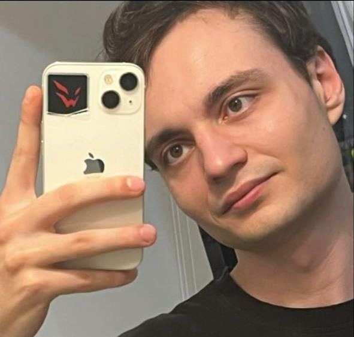

Создаем интеллектуальных агентов
для контента и IT-решений
NeuroAI — генерация видео, аудио, изображений и высокотехнологичный IT-аутсорсинг. Автоматизируем творчество и бизнес-процессы с помощью передовых AI-моделей.
Что мы предлагаем
Современные AI-агенты и IT-услуги для бизнеса и креативных индустрий
Генерация изображений
Создание уникального визуального контента: от арта до фотореалистичных сцен с помощью нейросетей последнего поколения.
AI Видео
Автоматический монтаж, генерация видео по сценарию, аватары и анимация — всё на основе искусственного интеллекта.
Аудио & Озвучка
Синтез речи, клонирование голоса, создание подкастов и музыкальных треков с помощью AI-агентов.
IT Услуги
Разработка веб-приложений, Telegram-ботов, интеграция AI API, автоматизация бизнес-процессов.

Григорий Воробьев
Начинающий IT-специалист, энтузиаст искусственного интеллекта
Привет! Я Григорий, основатель NeuroAI. Активно учусь и развиваюсь в IT-сфере, комбинируя современные технологии AI с практическими задачами бизнеса. Моя миссия — сделать мощные инструменты генерации контента и IT-решения доступными каждому.
За плечами множество пет-проектов: от нейросетевых генераторов до высоконагруженных веб-сервисов. Постоянно исследую новые архитектуры LLM, диффузионные модели и подходы к автоматизации.
Начните проект с NeuroAI
Обсудим интеграцию AI-агентов, разработку или генерацию контента под ваш запрос.